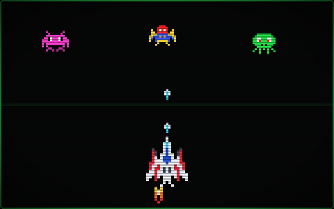
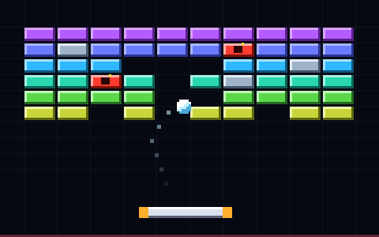
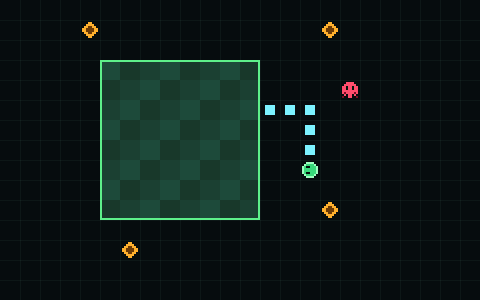
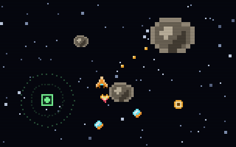
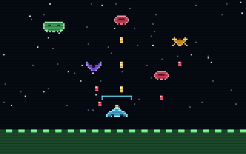
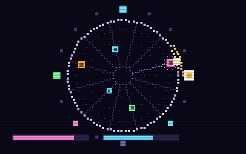
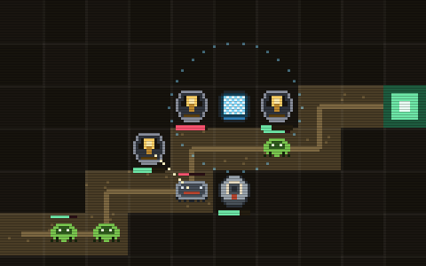
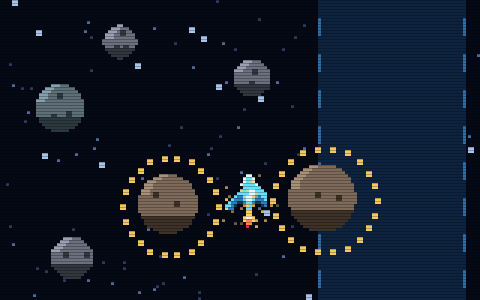
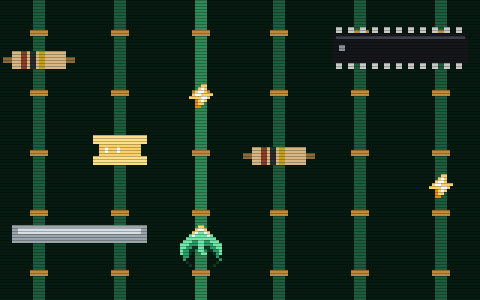

Arcade Library
Nine browser games whose entire simulation — physics, enemy AI, bullet pools, collisions, territory capture, fuel and cargo, a procedurally generated board — is hand-written WebAssembly Text. No game framework, no compiler front-end, no runtime dependency. JavaScript forwards input and draws what it reads back out of linear memory, and that is all it does.

A retro wave shooter. The swarm patrols the upper half of the arena, asteroids fall, and every cleared level adds one more enemy.

Brick-breaking where the brick layout, the ball physics and the power-up drops all live in the engine. The paddle follows the pointer, or a stick on touch.

Leave your territory, loop back, and everything the loop sealed off becomes yours. A flood fill decides what counts as enclosed.

Break rocks into smaller rocks, fill the hold, and fly it home before the tank runs dry. Drawn at 320x240 with scanlines, on purpose.

Hold a line against attackers that each pick their own path. A shield that only recovers once the shooting stops, and a combo that decays.

The engine is the sequencer. Enemies arrive on sixteenth notes and a shot fired on the beat hits three times as hard, so the music and the game cannot drift apart.

You place, and then you watch. Guns overheat and trip; a vent shoots nothing and cools the eight squares around it, and every vent is a gun you did not build.

Nothing to shoot and nothing to collect. Close passes are the only score and the only repair, and the safe line is drawn on the board so you can see what refusing it costs.

Six traces, components coming at you, and current draining the whole time. Nothing to shoot — the only verb is which trace you are on.
A full course in docs/ — the language from first principles, the ecosystem around it, and then the Pixel Wave, Worm Chase, Asteroid Miner, Sector Defense and Circuit Runner engines as the worked example. Twenty-two chapters, a glossary and a reading list.
git clone https://github.com/GautamGoklani/arcade-library cd arcade-library npm install # wabt, the WebAssembly Binary Toolkit npm run build # every game.wat → game.wasm npm run serve # http://localhost:8080
The compiled .wasm files are committed, so a fresh checkout is playable without
installing anything. npm run check verifies they still match their sources.